The Zero-Product Property states that if two polynomials multiply to make zero, then either the first polynomial must equal zero or the second polynomial must equal zero.
The Zero-Product Property:
If a・b = 0, then either a = 0 or b = 0
Recall: The Standard Form of a Polynomial can be written as ax2 + bx + c = 0. If the polynomial can be factored, then the Zero-Product Property can be used to solve the equation. When you solve the equation, you are also locating the x-intercepts of the graph of the function, which is very important to describe the function.
For example: x2 + 5x + 6 = 0, can be factored to (x + 2)(x + 3) = 0. Using the Zero-Product Property, either (x + 2) = 0 or (x + 3) = 0. Solving each equation for x:
x + 2 = 0 means x = -2, and x + 3 = 0 means x = -3.
The graph of x2 + 5x + 6 crosses the x-axis at -2 and -3, as shown in the graph below.
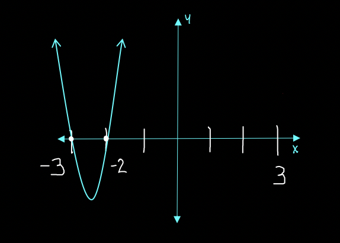
Factoring the polynomial is the hardest part. You might want to review Factoring Polynomials before proceeding with this unit.
The x-intercepts of a Parabola are the locations where the graph of the polynomial crosses the x-axis. The x-intercepts are also called:
Example: Use the Zero-Product Property to locate the Zeros of the function.
x2 + 12x + 32 = 0
Step 1: Factor x2 + 12x + 32
We need two numbers that add to 12 and multiply to equal 32.
Using Diamond Math:
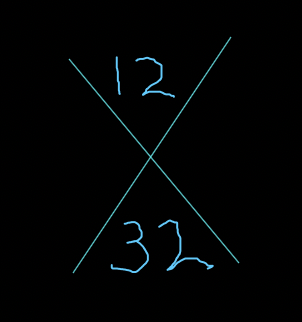
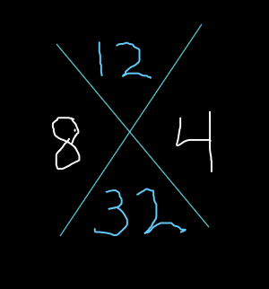
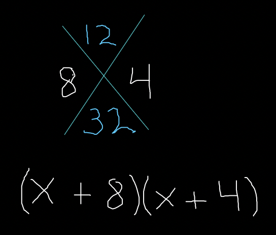
The function becomes: (x + 8)(x + 4) = 0
Applying the Zero-Product Property:
x + 8 = 0 and x + 4 = 0
Solving for x, we get x = -8 and -4. These are the solutions of the function. It also tells us that the graph crosses the x-axis at -8 and -4.
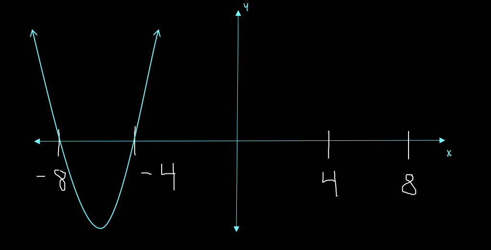
Example: Use the Zero-Product Property to locate the Zeros of the function.
x2 - 3x - 10 = 0
Step 1: Factor x2 - 3x - 10
We need two numbers that add to equal -3 and multiply to equal -10.
Using Diamond Math:
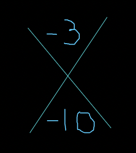
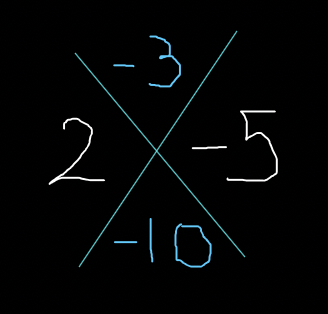
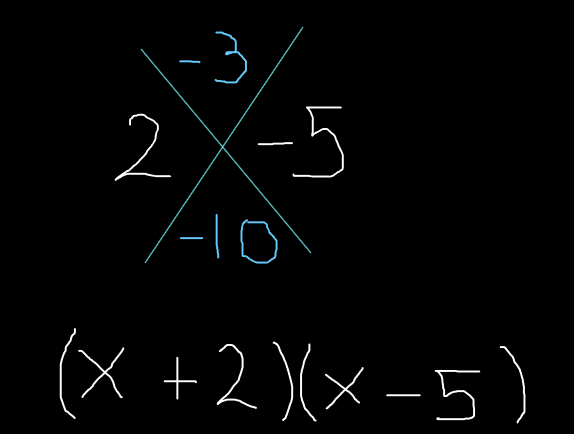
The function becomes: (x + 2)(x - 5) = 0
Applying the Zero-Product Property:
x + 2 = 0 and x - 5 = 0
Solving for x, we get x = -2 and 5. These are the solutions of the function. It also tells us that the graph crosses the x-axis at -2 and 5.
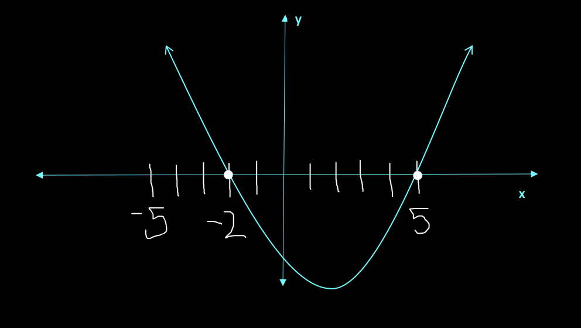
Example: Use the Zero-Product Property to locate the Zeros of the function.
x2 + x - 12 = 0
Step 1: Factor x2 + x - 12
We need two numbers that add to equal 1 and multiply to equal -12.
Using Diamond Math:
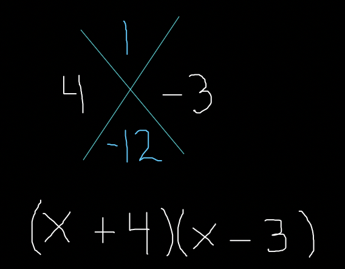
The function becomes (x + 4)(x - 3) = 0
Applying the Zero-Product Property:
x + 4 = 0 and x - 3 = 0
Solving for x we get x = -4 and x = 3.
The solutions are x = -4, 3 *Answer
Example: Use the Zero-Product Property to locate the Zeros of the function.
x2 + 10x + 21 = 0
Step 1: Factor x2 + 10x + 21
We need two numbers that add to equal 10 and multiply to equal 21.
Using Diamond Math:
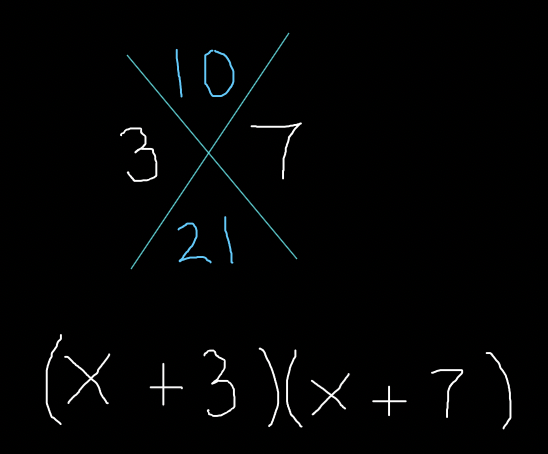
The function becomes (x + 3)(x + 7) = 0
Applying the Zero-Product Property:
x + 3 = 0 and x + 7 = 0
Solving for x we get x = -3 and x = -7.
The solutions are x = -3, -7 *Answer
Example: Use the Zero-Product Property to locate the Zeros of the function.
x2 + 2x - 24 = 0
Step 1: Factor x2 + 2x - 24
We need two numbers that add to equal 2 and multiply to equal 24.
Using Diamond Math:
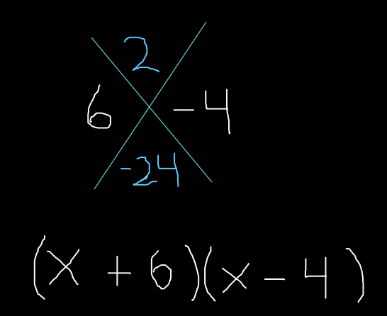
The function becomes (x + 6)(x - 4) = 0
Applying the Zero-Product Property:
x + 6 = 0 and x - 4 = 0
Solving for x we get x = -6 and x = 4.
The solutions are x = -6, 4 *Answer
Example: Use the Zero-Product Property to locate the Zeros of the function.
x2 - 36 = 0
Step 1: Factor x2 + 0x - 36
We need two numbers that add to equal 0 and multiply to equal -36.
Using Diamond Math:
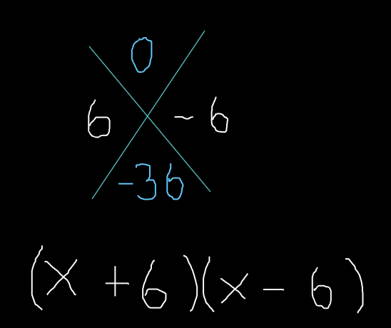
The function becomes (x + 6)(x - 6) = 0
Applying the Zero-Product Property:
x + 6 = 0 and x - 6 = 0
Solving for x we get x = -6 and x = 6.
The solutions are x = -6, 6 *Answer
Now you try:
Use the Zero-Product Property to locate the Zeros of the function.
x2 + 12x + 35 = 0
The zeros are:
Now you try:
Use the Zero-Product Property to locate the Zeros of the function.
x2 - x - 20 = 0
The zeros are:
Now you try:
Use the Zero-Product Property to locate the Zeros of the function.
x2 - 9x + 18 = 0
The zeros are: